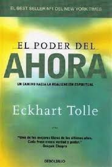

Recursos de ayuda
Si estás atravesando una relación tóxica o conocés a alguien que podría necesitar apoyo, existen líneas y espacios donde podés encontrar orientación, contención y acompañamiento profesional.
Recursos en Uruguay
- Línea 0800 4141 — Atención y orientación en situaciones de violencia basada en género.
- WhatsApp 092 4141 41 — Asistencia las 24 horas, todos los días.
- Policía — 911 en casos de emergencia inmediata.
- Guía de Recursos del MIDES
- Apoyos económicos y subsidios
Recursos Online:
- Chat 144 online
- Organización "Basta de Violencias"
- Fundación ANAR: orientación a adolescentes en riesgo
Herramientas de bienestar:
La sanación no es un proceso que una herramienta pueda solucionar, pero si nos pueden aportar una ayuda en ese proceso.
- Apps de meditación: Headspace, Calm, Petit Bambou
- Journaling digital: Daylio, Journey
- Libros recomendados:
- "Amar o depender" – Walter Riso
- "Ya te dije adiós, ahora cómo te olvido" – Walter Riso
- "El poder del ahora" – Eckhart Tolle 
No estás solo/a
Pedir ayuda es un acto de valentía. Hablar de lo que pasa puede ser el comienzo de una nueva etapa.